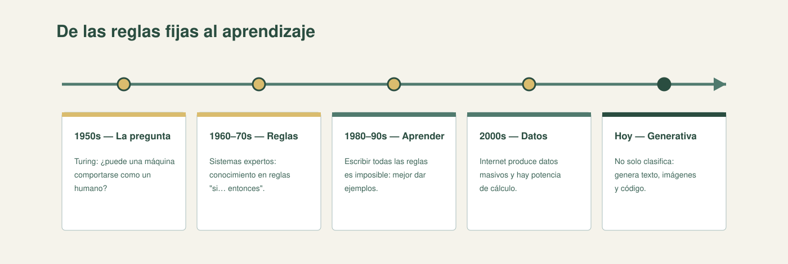

Al terminar, podrás recorrer la historia de la inteligencia artificial en cinco momentos y explicar por qué, en algún punto, la estrategia cambió: de escribir reglas a aprender de los datos.
Apoyado en Inteligencia artificial: un enfoque moderno (Russell y Norvig).
Ver referencia →
La idea central
La inteligencia artificial (IA) es el campo que construye sistemas capaces de realizar tareas que asociamos con la inteligencia humana: reconocer, decidir, traducir, recomendar, generar. No es un solo método, sino una historia con dos filosofías que conviven: decirle a la máquina qué hacer o dejar que descubra los patrones.
Cinco momentos
El recorrido se puede contar en cinco pasos:

1950s — La pregunta. Turing plantea si una máquina puede comportarse como un humano. La pregunta abre el campo.
1960–70s — Las reglas. Los sistemas expertos codifican el conocimiento de un especialista como reglas "si… entonces".
1980–90s — El aprendizaje. Codificar todas las reglas del mundo real es imposible; mejor dar ejemplos a la máquina para que descubra los patrones.
2000s — Datos y cómputo. Internet produce datos masivos y las máquinas ganan potencia de cálculo: el aprendizaje automático escala.
Hoy — IA generativa. Los modelos no solo clasifican: generan texto, imágenes y código.
Regla de oro: el giro decisivo de la historia no fue más potencia, sino un cambio de estrategia: pasar de escribir reglas a dar ejemplos y dejar que el sistema encuentre el patrón.
Practica: cinco momentos y dos filosofías
Elige una opción. Recibirás la corrección al instante.
1. ¿Qué pregunta abrió el campo de la IA en los años 1950?
Por qué: la pregunta de Turing abre el campo: la IA busca que las máquinas hagan tareas asociadas a la inteligencia humana.
2. Los sistemas expertos de los 60–70 codificaban el conocimiento como:
Por qué: la era de las reglas buscaba codificar a mano el conocimiento de un especialista; de ahí el nombre "sistemas expertos".
3. ¿Por qué la IA giró hacia el aprendizaje en los 80–90?
Por qué: el mundo real es demasiado variado para escribirlo todo en reglas; por eso se dio ejemplos a la máquina.
4. ¿Qué aportaron los años 2000 a la IA?
Por qué: internet multiplicó los datos y el cómputo creció; eso hizo viable entrenar modelos a gran escala.
5. ¿Qué distingue a la IA generativa de la anterior?
Por qué: los modelos generativos producen texto, imágenes y código; no se limitan a asignar una categoría.
6. "Decirle a la máquina qué hacer" y "dejar que descubra los patrones" son dos perspectivas de la IA que:
Por qué: determinista e indeterminista conviven; muchas soluciones reales mezclan reglas y aprendizaje.
La frase que lo resume
La historia de la IA es el paso de escribir reglas a dar ejemplos: cuanto más complejo el problema, más conviene dejar que el sistema descubra el patrón con datos.
Fuente principal
Para profundizar: Russell y Norvig, Inteligencia artificial: un enfoque moderno (historia de la IA).
Los cinco momentos están resumidos en la hoja de referencia del bloque.
¿Algo te hace dudar? Pregúntame y lo desarmamos — por ejemplo: "¿por qué se dejaron de usar los sistemas expertos?" o "¿qué tiene de nuevo la IA de hoy?".